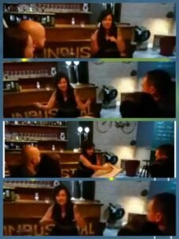

<?xml version="1.0" encoding="UTF-8"?><rss version="2.0"
	xmlns:content="http://purl.org/rss/1.0/modules/content/"
	xmlns:wfw="http://wellformedweb.org/CommentAPI/"
	xmlns:dc="http://purl.org/dc/elements/1.1/"
	xmlns:atom="http://www.w3.org/2005/Atom"
	xmlns:sy="http://purl.org/rss/1.0/modules/syndication/"
	xmlns:slash="http://purl.org/rss/1.0/modules/slash/"
	>

<channel>
	<title>Conferencias | Rita Valero</title>
	<atom:link href="./index.html" rel="self" type="application/rss+xml" />
	<link>../../../index.html</link>
	<description>Voz y palabras</description>
	<lastBuildDate>Sat, 13 Dec 2025 11:11:01 +0000</lastBuildDate>
	<language>ca</language>
	<sy:updatePeriod>
	hourly	</sy:updatePeriod>
	<sy:updateFrequency>
	1	</sy:updateFrequency>
	<generator>https://wordpress.org/?v=7.1.3</generator>

<image>
	<url>../../../wp-content/uploads/2021/08/cropped-favicon-rita-valero-32x32.jpg</url>
	<title>Conferencias | Rita Valero</title>
	<link>../../../index.html</link>
	<width>32</width>
	<height>32</height>
</image> 
	<item>
		<title>Quizá todo es un sueño</title>
		<link>../../../project/quiza-todo-es-un-sueno/index.html</link>
					<comments>../../../project/quiza-todo-es-un-sueno/index.html#respond</comments>
		
		<dc:creator><![CDATA[Rita Valero]]></dc:creator>
		<pubDate>Sun, 16 Jan 2022 20:32:20 +0000</pubDate>
				<guid isPermaLink="false">http://novaweb.ritavalero.com/?post_type=project&#038;p=851</guid>

					<description><![CDATA[¿Estás segura de que estás despierta en este momento? Esta charla propone un viaje intelectual y emocional para cuestionar la unidad esencial de las verdades que sustentan nuestras creencias y poner en entredicho las ideas heredadas que a menudo damos por sentadas. Nos invita a mirar más allá de lo evidente, a dudar de aquello [&#8230;]]]></description>
										<content:encoded><![CDATA[<p data-start="165" data-end="224"><strong data-start="165" data-end="222">¿Estás segura de que estás despierta en este momento?</strong></p>
<p data-start="226" data-end="616">Esta charla propone un viaje intelectual y emocional para cuestionar la unidad esencial de las verdades que sustentan nuestras creencias y poner en entredicho las ideas heredadas que a menudo damos por sentadas. Nos invita a mirar más allá de lo evidente, a dudar de aquello que consideramos incuestionable y a explorar las raíces filosóficas que han desafiado las certezas de cada época.</p>
<p data-start="226" data-end="616">
<p data-start="618" data-end="1151">A lo largo de la historia, numerosos pensadores han emprendido esta misma tarea de cuestionamiento profundo. Algunos han sido llamados “filósofos de la sospecha” por atreverse a desafiar el orden establecido; otros han sufrido destierro, encarcelamiento o incluso la pena de muerte por sus ideas. La filosofía, aquí, se convierte en un acto valiente de investigación y autodescubrimiento: una invitación a despertar, a mirar más allá de lo aparente y a enfrentar las preguntas que pueden transformar nuestra manera de ver el mundo.</p>
<p data-start="618" data-end="1151">
<p data-start="1153" data-end="1517">Esta charla no solo invita a reflexionar, sino también a vivir la filosofía de manera activa. Es un espacio interactivo, vivencial y dinámico, diseñado para fomentar el diálogo, el intercambio social y el aprendizaje personal. Cada participante podrá explorar sus propias certezas, desafiar sus supuestos y compartir perspectivas en un entorno seguro y creativo.</p>
<p data-start="1153" data-end="1517">
<p data-start="1519" data-end="1600">¿Te atreves a correr el riesgo de cuestionarlo todo y despertar verdaderamente?</p>
<p data-start="1519" data-end="1600">
<p data-start="1602" data-end="1637"><strong data-start="1602" data-end="1614">Idiomas:</strong> Castellano – Catalán</p>
<p>&nbsp;</p>
<p>&nbsp;</p>
]]></content:encoded>
					
					<wfw:commentRss>../../../project/quiza-todo-es-un-sueno/feed/index.html</wfw:commentRss>
			<slash:comments>0</slash:comments>
		
		
			</item>
		<item>
		<title>La buena suerte</title>
		<link>../../../project/la-buena-suerte/index.html</link>
					<comments>../../../project/la-buena-suerte/index.html#respond</comments>
		
		<dc:creator><![CDATA[Rita Valero]]></dc:creator>
		<pubDate>Sun, 16 Jan 2022 20:16:35 +0000</pubDate>
				<guid isPermaLink="false">http://novaweb.ritavalero.com/?post_type=project&#038;p=843</guid>

					<description><![CDATA[¿La suerte es una cuestión de azar o la creamos nosotros? ¿Eres optimista o pesimista, determinista o indeterminista? Esta charla invita a sumergirse en uno de los grandes debates filosóficos: la naturaleza de la suerte, el destino y la libertad. A través del análisis del pensamiento de diversos autores y tradiciones, exploraremos si nuestra vida [&#8230;]]]></description>
										<content:encoded><![CDATA[<p data-start="126" data-end="249"><strong data-start="126" data-end="247">¿La suerte es una cuestión de azar o la creamos nosotros? ¿Eres optimista o pesimista, determinista o indeterminista?</strong></p>
<p data-start="251" data-end="583">Esta charla invita a sumergirse en uno de los grandes debates filosóficos: la naturaleza de la suerte, el destino y la libertad. A través del análisis del pensamiento de diversos autores y tradiciones, exploraremos si nuestra vida está gobernada por el azar o si, por el contrario, somos los arquitectos de nuestra propia fortuna.</p>
<p data-start="585" data-end="1079">Será un espacio para cuestionar nuestras ideas preconcebidas, examinar los distintos enfoques sobre el optimismo, el pesimismo, el determinismo y el indeterminismo, y reflexionar sobre cómo estas perspectivas influyen en nuestra forma de vivir, decidir y relacionarnos con el mundo. La filosofía aquí se convierte en una herramienta para pensar críticamente y para profundizar en nuestra propia experiencia personal, invitándonos a tomar conciencia de las elecciones que moldean nuestra vida.</p>
<p data-start="1081" data-end="1400">La charla se desarrolla de manera interactiva, vivencial y dinámica, fomentando el diálogo, el intercambio social y el aprendizaje personal. Cada participante tendrá la oportunidad de expresar sus ideas, confrontarlas con otras perspectivas y vivir la filosofía como un ejercicio activo de descubrimiento y reflexión.</p>
<p data-start="1402" data-end="1570">Una propuesta para quienes desean mirar más allá de la superficie, cuestionar lo que damos por sentado y explorar la compleja relación entre azar, elección y destino.</p>
<p data-start="1402" data-end="1570">
<p data-start="1402" data-end="1570"><strong data-start="1572" data-end="1584">Idiomas:</strong> Castellano – Catalán</p>
<p>&nbsp;</p>
]]></content:encoded>
					
					<wfw:commentRss>../../../project/la-buena-suerte/feed/index.html</wfw:commentRss>
			<slash:comments>0</slash:comments>
		
		
			</item>
		<item>
		<title>Las filósofas</title>
		<link>../../../project/las-filosofas/index.html</link>
					<comments>../../../project/las-filosofas/index.html#respond</comments>
		
		<dc:creator><![CDATA[Rita Valero]]></dc:creator>
		<pubDate>Sun, 16 Jan 2022 20:10:24 +0000</pubDate>
				<guid isPermaLink="false">http://novaweb.ritavalero.com/?post_type=project&#038;p=839</guid>

					<description><![CDATA[En esta charla nos adentraremos en la historia del pensamiento a través de la mirada de las filósofas, escogidas entre disciplinas diversas y provenientes de distintos ámbitos de interpretación. Analizaremos cómo sus ideas y reflexiones han contribuido a modelar la filosofía en diferentes épocas y contextos, destacando la riqueza y diversidad del pensamiento femenino. Exploraremos [&#8230;]]]></description>
										<content:encoded><![CDATA[<p data-start="123" data-end="495">En esta charla nos adentraremos en la historia del pensamiento a través de la mirada de las filósofas, escogidas entre disciplinas diversas y provenientes de distintos ámbitos de interpretación. Analizaremos cómo sus ideas y reflexiones han contribuido a modelar la filosofía en diferentes épocas y contextos, destacando la riqueza y diversidad del pensamiento femenino.</p>
<p data-start="497" data-end="856">Exploraremos mujeres que han dejado una huella profunda tanto con su pensamiento como con su acción, en campos tan variados como la ética, la política, la estética, la epistemología y otras áreas de la filosofía. La actividad nos permitirá descubrir cómo sus aportes dialogan con la historia del pensamiento y cómo siguen siendo relevantes en la actualidad.</p>
<p data-start="858" data-end="1187">La charla está diseñada para ser interactiva, vivencial y dinámica, fomentando la reflexión, el intercambio social y el aprendizaje personal. Cada participante podrá acercarse a estas figuras desde una perspectiva activa, descubriendo sus ideas y cuestionando sus propias concepciones a través del diálogo y la experimentación.</p>
<p data-start="1189" data-end="1400">Un espacio para conocer, valorar y poner en perspectiva las contribuciones de las mujeres en la filosofía, reconociendo la importancia de su legado y su influencia en la cultura y el pensamiento contemporáneo.</p>
<p data-start="1402" data-end="1437"><strong data-start="1402" data-end="1414">Idiomas:</strong> Castellano – Catalán</p>
<p data-start="1402" data-end="1437">
<p>&nbsp;</p>
]]></content:encoded>
					
					<wfw:commentRss>../../../project/las-filosofas/feed/index.html</wfw:commentRss>
			<slash:comments>0</slash:comments>
		
		
			</item>
		<item>
		<title>¿Quieres arreglar el mundo?</title>
		<link>../../../project/quieres-arreglar-el-mundo/index.html</link>
					<comments>../../../project/quieres-arreglar-el-mundo/index.html#respond</comments>
		
		<dc:creator><![CDATA[Rita Valero]]></dc:creator>
		<pubDate>Fri, 14 Jan 2022 20:42:52 +0000</pubDate>
				<guid isPermaLink="false">http://novaweb.ritavalero.com/?post_type=project&#038;p=775</guid>

					<description><![CDATA[¿Quieres arreglar el mundo? Los grandes filósofos de todos los tiempos nos han ofrecido herramientas para comprender el Universo, la sociedad y nuestra propia existencia. Esta charla te invita a un viaje fascinante desde el macrocosmos hasta el microcosmos, explorando cómo las leyes universales, las ideas filosóficas y el autoconocimiento se entrelazan para transformar nuestra [&#8230;]]]></description>
										<content:encoded><![CDATA[<p data-start="125" data-end="158"><strong data-start="125" data-end="156">¿Quieres arreglar el mundo?</strong></p>
<p data-start="160" data-end="531">Los grandes filósofos de todos los tiempos nos han ofrecido herramientas para comprender el Universo, la sociedad y nuestra propia existencia. Esta charla te invita a un viaje fascinante desde el <strong data-start="356" data-end="371">macrocosmos</strong> hasta el <strong data-start="381" data-end="396">microcosmos</strong>, explorando cómo las leyes universales, las ideas filosóficas y el autoconocimiento se entrelazan para transformar nuestra realidad.</p>
<p data-start="533" data-end="890">Aprenderás a cuestionar lo establecido, a reflexionar sobre tus propias creencias y a descubrir cómo incluso pequeñas acciones personales pueden generar cambios significativos en la sociedad. No se trata solo de teoría: es una experiencia <strong data-start="772" data-end="799">vivencial e interactiva</strong>, donde la reflexión se combina con dinámicas prácticas y espacios de intercambio social.</p>
<p data-start="892" data-end="929">Esta charla es para quienes buscan:</p>
<ul data-start="930" data-end="1210">
<li data-start="930" data-end="1002">
<p data-start="932" data-end="1002">Entender cómo funcionan el mundo y las personas a un nivel profundo.</p>
</li>
<li data-start="1003" data-end="1077">
<p data-start="1005" data-end="1077">Explorar su propio universo interior y su potencial de impacto social.</p>
</li>
<li data-start="1078" data-end="1143">
<p data-start="1080" data-end="1143">Participar en un aprendizaje activo, dinámico y colaborativo.</p>
</li>
<li data-start="1144" data-end="1210">
<p data-start="1146" data-end="1210">Conectar con otros en un diálogo enriquecedor y transformador.</p>
</li>
</ul>
<p data-start="1212" data-end="1310"><strong data-start="1212" data-end="1226">Modalidad:</strong> Reflexiva y dinámica.<br data-start="1272" data-end="1275" /><strong data-start="1275" data-end="1287">Idiomas:</strong> Castellano – Catalán</p>
<p data-start="1312" data-end="1442">Transforma tu mirada sobre el mundo… y sobre ti mismo. Porque <strong data-start="1374" data-end="1439">cambiar el mundo empieza por cambiar la forma en que lo vemos</strong>.</p>
<p data-start="1312" data-end="1442">
<p>&nbsp;</p>
]]></content:encoded>
					
					<wfw:commentRss>../../../project/quieres-arreglar-el-mundo/feed/index.html</wfw:commentRss>
			<slash:comments>0</slash:comments>
		
		
			</item>
		<item>
		<title>¿Es real la realidad?</title>
		<link>../../../project/es-real-la-realidad/index.html</link>
					<comments>../../../project/es-real-la-realidad/index.html#respond</comments>
		
		<dc:creator><![CDATA[Rita Valero]]></dc:creator>
		<pubDate>Fri, 14 Jan 2022 20:18:19 +0000</pubDate>
				<guid isPermaLink="false">http://novaweb.ritavalero.com/?post_type=project&#038;p=768</guid>

					<description><![CDATA[¿En qué consiste la verdadera realidad? La realidad es una pregunta que ha fascinado a filósofos, científicos y pensadores desde la antigüedad. ¿Es lo que percibimos realmente lo que existe? ¿O solo una interpretación subjetiva de nuestro mundo? Esta charla propone un viaje intelectual y vivencial para explorar los límites entre lo real y lo [&#8230;]]]></description>
										<content:encoded><![CDATA[<p data-start="119" data-end="164"><strong data-start="119" data-end="162">¿En qué consiste la verdadera realidad?</strong></p>
<p data-start="166" data-end="503">La realidad es una pregunta que ha fascinado a filósofos, científicos y pensadores desde la antigüedad. ¿Es lo que percibimos realmente lo que existe? ¿O solo una interpretación subjetiva de nuestro mundo? Esta charla propone un viaje intelectual y vivencial para explorar los límites entre lo real y lo aparente, la certeza y la duda.</p>
<p data-start="505" data-end="550">Nos acercaremos a cuestiones fundamentales:</p>
<ul data-start="551" data-end="855">
<li data-start="551" data-end="652">
<p data-start="553" data-end="652">¿Ha encontrado la ciencia moderna alguna respuesta definitiva sobre la naturaleza de la realidad?</p>
</li>
<li data-start="653" data-end="771">
<p data-start="655" data-end="771">¿Es nuestra percepción una ventana confiable al mundo, o solo un reflejo parcial y condicionado por nuestra mente?</p>
</li>
<li data-start="772" data-end="855">
<p data-start="774" data-end="855">¿Existe una única realidad o múltiples realidades coexistiendo simultáneamente?</p>
</li>
</ul>
<p data-start="857" data-end="1106">A través de <strong data-start="869" data-end="930">algunas reflexiones filosóficas de diversas épocas</strong>, analizaremos cómo las grandes ideas sobre la existencia, el conocimiento y la percepción pueden ayudarnos a comprender mejor nuestro entorno y nuestra propia vida.</p>
<p data-start="1108" data-end="1380">Esta experiencia es <strong data-start="1128" data-end="1165">interactiva, vivencial y dinámica</strong>: combina el análisis filosófico con ejercicios de reflexión personal, diálogo social y aprendizaje colaborativo. No sólo se trata de pensar, sino de sentir y compartir la experiencia del cuestionamiento profundo.</p>
<p data-start="1382" data-end="1487"><strong data-start="1382" data-end="1396">Modalidad:</strong> Charla reflexiva y dinámica.<br data-start="1449" data-end="1452" /><strong data-start="1452" data-end="1464">Idiomas:</strong> Castellano – Catalán</p>
<p data-start="1489" data-end="1627">Sumérgete en el misterio de la existencia y descubre cómo la filosofía puede abrir nuevas perspectivas sobre lo que llamamos “realidad”.</p>
<p data-start="1489" data-end="1627">
]]></content:encoded>
					
					<wfw:commentRss>../../../project/es-real-la-realidad/feed/index.html</wfw:commentRss>
			<slash:comments>0</slash:comments>
		
		
			</item>
		<item>
		<title>Cómo afrontamos nuestros miedos</title>
		<link>../../../project/como-afrontar-tus-miedos/index.html</link>
					<comments>../../../project/como-afrontar-tus-miedos/index.html#respond</comments>
		
		<dc:creator><![CDATA[Rita Valero]]></dc:creator>
		<pubDate>Wed, 05 Jan 2022 20:42:01 +0000</pubDate>
				<guid isPermaLink="false">http://novaweb.ritavalero.com/?post_type=project&#038;p=755</guid>

					<description><![CDATA[Los miedos forman parte de nuestra vida, pero aprender a enfrentarlos y comprender su origen puede transformar nuestra relación con nosotras mismas y con el mundo. Esta charla te invita a un viaje hacia el interior, un espacio seguro para identificar tus miedos y explorar cómo gestionarlos desde diferentes perspectivas filosóficas. Exploraremos cuatro caminos para [&#8230;]]]></description>
										<content:encoded><![CDATA[<p data-start="113" data-end="452">Los miedos forman parte de nuestra vida, pero aprender a enfrentarlos y comprender su origen puede transformar nuestra relación con nosotras mismas y con el mundo. Esta charla te invita a un <strong data-start="304" data-end="331">viaje hacia el interior</strong>, un espacio seguro para identificar tus miedos y explorar cómo gestionarlos desde diferentes perspectivas filosóficas.</p>
<p data-start="454" data-end="511">Exploraremos <strong data-start="467" data-end="508">cuatro caminos para afrontar el miedo</strong>:</p>
<ul>
<li data-start="515" data-end="629"><strong data-start="515" data-end="528">Posesión:</strong> Reconocer y aceptar nuestros miedos como parte de nosotros, sin negar ni reprimir lo que sentimos.</li>
<li data-start="633" data-end="751"><strong data-start="633" data-end="648">Aceptación:</strong> Comprender que el miedo es una experiencia natural, y aprender a convivir con él sin que nos domine.</li>
<li data-start="755" data-end="867"><strong data-start="755" data-end="770">Protección:</strong> Desarrollar estrategias y recursos internos para resguardar nuestra paz y seguridad emocional.</li>
<li data-start="871" data-end="997"><strong data-start="871" data-end="884">Maestría:</strong> Transformar el miedo en un aliado, convirtiéndolo en una fuente de aprendizaje, fuerza y crecimiento personal.</li>
</ul>
<p data-start="999" data-end="1319">Esta charla es <strong data-start="1014" data-end="1051">interactiva y vivencial</strong>, combinando reflexión filosófica con ejercicios prácticos, diálogo social y aprendizaje personal. Cada participante tendrá la oportunidad de experimentar, compartir y descubrir herramientas que permitan <strong data-start="1255" data-end="1316">afrontar los miedos de manera consciente y transformadora</strong>.</p>
<p data-start="1321" data-end="1426"><strong data-start="1321" data-end="1335">Modalidad:</strong> Charla reflexiva y dinámica.<br data-start="1388" data-end="1391" /><strong data-start="1391" data-end="1403">Idiomas:</strong> Castellano – Catalán</p>
<p data-start="1428" data-end="1551">Atrévete a mirar de frente tus miedos y a convertirlos en una fuerza para el crecimiento personal y la libertad interior.</p>
<p data-start="1428" data-end="1551">
<p>&nbsp;</p>
]]></content:encoded>
					
					<wfw:commentRss>../../../project/como-afrontar-tus-miedos/feed/index.html</wfw:commentRss>
			<slash:comments>0</slash:comments>
		
		
			</item>
		<item>
		<title>Filosof-Art</title>
		<link>../../../project/filosof-art/index.html</link>
					<comments>../../../project/filosof-art/index.html#respond</comments>
		
		<dc:creator><![CDATA[Rita Valero]]></dc:creator>
		<pubDate>Sat, 01 Jan 2022 18:49:40 +0000</pubDate>
				<guid isPermaLink="false">http://novaweb.ritavalero.com/?post_type=project&#038;p=833</guid>

					<description><![CDATA[Charla en la que, a través del dibujo, la pintura, la escultura y la música, nos adentramos en el mundo de la filosofía desde distintas perspectivas: la general, la personal, la común y la cultural que cada una de nosotras aporta. Se trata de una propuesta única para explorar la filosofía desde un enfoque creativo [&#8230;]]]></description>
										<content:encoded><![CDATA[<p data-start="154" data-end="601">Charla en la que, a través del dibujo, la pintura, la escultura y la música, nos adentramos en el mundo de la filosofía desde distintas perspectivas: la general, la personal, la común y la cultural que cada una de nosotras aporta.</p>
<p data-start="154" data-end="601">Se trata de una propuesta única para explorar la filosofía desde un enfoque creativo y sensorial, descubriendo cómo el arte puede convertirse en una herramienta para reflexionar sobre nuestras ideas, emociones y experiencias.</p>
<p data-start="603" data-end="1138">Será una experiencia que nos invita a conectar con nuestra propia manera de pensar y sentir, así como a apreciar las visiones de los demás, generando un espacio de diálogo enriquecedor.</p>
<p data-start="603" data-end="1138">La actividad se desarrolla de manera interactiva y vivencial, fomentando la reflexión, el aprendizaje personal y el intercambio social. La dinámica propuesta permite que cada participante se exprese a través del arte, descubriendo nuevas formas de comprender conceptos filosóficos y de vincularlos con nuestra vida cotidiana y con nuestra cultura.</p>
<p data-start="1140" data-end="1477">Esta charla está diseñada para ser fluída, flexible y participativa, ofreciendo un espacio seguro y creativo en el que explorar ideas, cuestionar supuestos y compartir perspectivas. Es una invitación a vivir la filosofía de manera práctica, transformando el arte en un puente hacia el pensamiento crítico y la introspección personal.</p>
<p data-start="1479" data-end="1510"><strong>Idiomas:</strong> Castellano – Catalán</p>
<p data-start="1479" data-end="1510">
]]></content:encoded>
					
					<wfw:commentRss>../../../project/filosof-art/feed/index.html</wfw:commentRss>
			<slash:comments>0</slash:comments>
		
		
			</item>
		<item>
		<title>Conferencias</title>
		<link>../../../project/conferencias/index.html</link>
					<comments>../../../project/conferencias/index.html#respond</comments>
		
		<dc:creator><![CDATA[Rita Valero]]></dc:creator>
		<pubDate>Fri, 31 Dec 2021 17:31:01 +0000</pubDate>
				<guid isPermaLink="false">http://novaweb.ritavalero.com/?post_type=project&#038;p=741</guid>

					<description><![CDATA[Sí, ya lo sé, hago muchas cosas &#8230;. pero todas ellas las hago con el corazón y llena de ilusión. Además intento formarme todo lo que puedo, para que lo que hago sea de calidad. Soy una persona curiosa, y no digo curiosa como de que me quiera enterar de toda la vida privada de [&#8230;]]]></description>
										<content:encoded><![CDATA[<p style="text-align: justify;"><span id="result_box" class="" lang="es"><span title="Sí, ja ho sé, faig moltes coses….">Sí, ya lo sé, hago muchas cosas &#8230;. </span><span title="però totes elles les faig amb el cor i plena d’il·lusió. ">pero todas ellas las hago con el corazón y llena de ilusión.</span></span></p>
<p style="text-align: justify;"><span title="A més intento formar-me tot el que puc, per tal que allò que faig sigui de qualitat. ">Además intento formarme todo lo que puedo, para que lo que hago sea de calidad.</span></p>
<p style="text-align: justify;"><span title="Sóc una persona curiosa, i no dic curiosa com que em vull assabentar de tota la vida privada de les diferents persones del meu voltant, no.">Soy una persona curiosa, y no digo curiosa como de que me quiera enterar de toda la vida privada de las diferentes personas de mi alrededor, no. </span><span title="Dic curiosa de mi mateixa, de la instrospecció, de la meva vida.">Digo curiosa de mí misma, de la introspección, de mi vida. </span><span title="Potser es va tergiversar al llarg de la història de la filosofia, però el súper-ésser de Nietzsche, no era el ser superior als altres, sinó l'ésser que es trascendeix a ell mateix, que es supera dia a dia, o al menys">Quizá se tergiversó lo largo de la historia de la filosofía, pero el súper-ser de <strong>Nietzsche</strong>, no era un ser superior a los demás, sino el ser que se trasciende a sí mismo, que se supera día a día, o al menos </span><span title="que fa tot el possible. ">que hace todo lo posible.</span></p>
<p style="text-align: justify;"><span title="Encara estic molt lluny d’aquest concepte, però ho intento.">Todavía estoy muy lejos de ese concepto, pero lo intento. </span><span title="Com deia, sóc una persona curiosa, per això m'agraden tant els gats, (no he vist un animal més curiós), i per això vaig començar a estudiar filosofia, per què la filosofia és l'amor a la saviesa (filos=">Como decía, soy una persona curiosa, por eso me gustan tanto los gatos, (no he visto un animal más curioso), y por eso empecé a estudiar filosofía, por que la filosofía es el amor a la sabiduría (filos = </span><span title="amor, sofia=saviesa), Aristòtil deia que l'ésser humà havia començat a fer filosofia per la seva capacitat de sorprendre's, per l'admiració cap a la natura, per voler saber més sobre com i d'on sorgien les coses.">amor, sofia = sabiduría), <strong>Aristóteles</strong> decía que el ser humano había empezado a hacer filosofía por su capacidad de sorprenderse, por la admiración hacia la naturaleza, por querer saber más sobre cómo y de donde surgían las cosas. </span><span title="Doncs bé, jo tenia curiositat per saber de moltes coses, per tant, quina millor carrera que la de filosofia, que és la mare de totes les ciències?">Pues bien, yo tenía curiosidad por saber de muchas cosas, por lo tanto, qué mejor carrera que la de filosofía, que es la madre de todas las ciencias? </span><span title="No s'estirin dels cabells els científics, que si ens posem a fer memòria, Tales de Milet, Pitàgores, el mateix Aristòtil, Descartes (creador del mètode científic), etc., per anomenar només uns quants, eren matemàtics i científics també,">No se estiren los pelos los científicos, que si nos ponemos a hacer memoria, <strong>Tales de Mileto</strong>, <strong>Pitágoras</strong>, el mismo <strong>Aristóteles</strong>, <strong>Descartes</strong> (creador del método científico), etc., por nombrar sólo a unos cuantos, eran matemáticos y científicos también, </span><span title="a més de filòsofs. ">además de filósofos.</span></p>
<p style="text-align: justify;"><span title="La filosofia és per mi aquella eina que ens permet lligar-ho tot, la salsa en un dinar, allò que fa que et plantegis coses més enllà del que mai te les havies plantejat, i sobre qualsevol tema. ">La filosofía es para mí aquella herramienta que nos permite enlazarlo todo, la salsa en una comida, lo que hace que te plantees cosas más allá de lo que nunca te las habías planteado, y sobre cualquier tema.</span></p>
<p style="text-align: justify;"><span title="Així que, a més de continuar estudiant música, vaig fer la carrera de filosofia. ">Así que, además de seguir estudiando música, hice la carrera de filosofía.</span></p>
<p style="text-align: justify;"><span title="La carrera en sí va ser un pel decepcionant, tot i que vaig conèixer grans amigues.">La carrera en sí fue un poco decepcionante, aunque conocí grandes amigas. </span><span title="Però vaig trobar professors de tots els estils.">Pero encontré profesores de todos los estilos. </span><span title="Estils pedagògics (per anomenar-los d’alguna manera), molt diversos, i algun cop també el professor que et deia “Cómprese usted mi libro, que ahí está todo.">Estilos pedagógicos (por llamarlos de alguna manera), muy diversos, y alguna vez también el profesor que te decía «Cómprese Usted mi libro, que ahí está todo. </span><span title="No hace falta que venga a las clases, con que se lo compre, ya aprobará el examen” (sort de les biblioteques!).">No Hace falta que venga a las clases, con que se lo compre, ya aprobará el examen» (¡suerte de las bibliotecas!). </span><span title="Evidentment també vaig trobar professors que per ensenyar-nos què era la por, començaven la classe donant-nos un ensurt monumental (1r la pràctica, després la teoria, aprenentatge significatiu). ">Evidentemente también encontré profesores que para enseñarnos qué era el miedo, comenzaban la clase dándonos un susto monumental (1º la práctica, después la teoría, aprendizaje significativo).</span></p>
<p style="text-align: justify;"><span title="Bé, el cas és que vaig fer la carrera, i em vaig dedicar a la docència.">Bueno, el caso es que hice la carrera, y me dediqué a la docencia. </span><span title="Donar classes de filosofia m'agrada molt, sobretot quan veig les cares dels alumnes, que van obrint més i més els ulls, perquè de cop i volta hi ha quelcom que els sorprèn, o acaben d'entendre alguna cosa, o resulta que un">Dar clases de filosofía me gusta mucho, sobre todo cuando veo las caras de los alumnos, que van abriendo más y más los ojos, porque de repente hay algo que les sorprende, o acaban de entender algo, o resulta que un </span><span title="filòsof del segle VI aC pensava el mateix que ells avui. ">filósofo del siglo VI aC pensaba lo mismo que ellos hoy.</span></p>
<p style="text-align: justify;"><span title="Però el cas és que per ser coherent amb mi mateixa, cosa que m'agrada molt, però que de vegades és més difícil del que sembla, doncs això, que per coherència, he decidit anar un pas més enllà de les simples classes en un">Pero el caso es que para ser coherente conmigo misma, cosa que me gusta mucho, pero que a veces es más difícil de lo que parece, pues eso, que por coherencia, he decidido ir un paso más allá de las simples clases en un </span><span title="institut, i vull emprendre la gran aventura de parlar de filosofia al carrer.">instituto, y quiero emprender la gran aventura de hablar de filosofía en la calle. </span><span title="I qui diu al carrer, diu al bar, al centre cívic, al casal de iaios, al de joves, a l’escola d’adults, a P3 (sí, els nens petits són els més grans filòsofs, de vegades!). ">Y quien dice en la calle, dice el bar, en el centro cívico, en el casal de abuelos, el de jóvenes, en la escuela de adultos, en P3 (¡sí, los niños pequeños son los más grandes filósofos, a veces!).</span></p>
<p style="text-align: justify;"><span title="Segur que si mai no t’han ensenyat filosofia, això et deu fer mitja por, o si te la van ensenyar com un “tostón”, no deus voler saber res de la filosofia.">Seguro que si nunca te han enseñado filosofía, esto te debe dar medio miedo, o si te la enseñaron como un «tostón», no querrás saber nada de la filosofía. </span><span title="Jo vaig tenir la gran sort, que em va ensenyar filosofia una professora apassionada, que la vivia, i li agradava (gràcies Carme).">Yo tuve la gran suerte, que me enseñó filosofía una profesora apasionada, que la vivía, y le gustaba (gracias <strong>Carme</strong>). </span><span title="Intentar estar a la seva alçada és difícil, però, com deia al principi, em formo, llegeixo, miro, observo, aprenc, desaprenc,.... i això cada dia!">Intentar estar a su altura es difícil, pero, como decía al principio, me formo, leo, miro, observo, aprendo, desaprendo, &#8230;. ¡y esto cada día! </span><span title="Sembla cansat, eh?, però si ho fas amb il·lusió, no ho és tant, de debò. ">Parece cansado, eh ?, pero si lo haces con ilusión, no lo es tanto, en serio.</span></p>
<p style="text-align: justify;"><span title="En fi, i ja amb això acabo, que al final m’he allargat més del que pensava, i no sé qui llegirà aquest missatge toooot sencer!">En fin, y ya con esto termino, que al final me he alargado más de lo que pensaba, ¡y no sé quién leerá este mensaje toooodo entero! </span><span title="Doncs que he començat una nova etapa vital (any nou, vida nova, que en diuen) i a més de continuar amb la música (que és la meva gran passió), també començo a fer xerrades de filosofia. ">Pues que he comenzado una nueva etapa vital (año nuevo, vida nueva, que se dice) y además de continuar con la música (que es mi gran pasión), también empiezo a dar charlas de filosofía.</span></p>
<p style="text-align: justify;"><span title="Els primers en donar-me l'oportunitat de posar-ho en marxa, van ser els amics de La Industrial c/ Allada nº 7 de Palafrugell, i la 1ª xerrada va ser el passat 30 de novembre de 2016. El tema era: Com">Los primeros en darme la oportunidad de ponerlo en marcha, fueron los amigos de La Industrial c / Allada nº 7 de Palafrugell, y la 1ª charla fue el pasado 30 de noviembre de 2016. El tema era: <em><strong>Como </strong></em></span><span title="afrontar les pors des de 4 diferents perspectives filosòfiques: Possessió, Acceptació, Protecció i Mestratge (aquesta la vaig fer per atrevir-me, jo mateixa, a fer tot això)."><em><strong>afrontar los miedos desde 4 diferentes perspectivas filosóficas: Posesión, Aceptación, Protección y Maestría</strong></em> (esta la hice para atreverme, yo misma, a hacer todo esto).</span></p>
<p style="text-align: justify;"></p>
<p><span id="result_box" class="" lang="es"><span class="">Agradecida</span> a los amigos que vinieron.</span></p>
<p><span class="">Intentando</span> <span class="">mejorar día</span> a día.</p>
<p>¡La aventura continúa!</p>
<p>¡Gracias!</p>
<p><strong>****** OTRAS CONFERENCIAS FILOSÓFICAS ******</strong></p>
<ul>
<li><span title="Els primers en donar-me l'oportunitat de posar-ho en marxa, van ser els amics de La Industrial c/ Allada nº 7 de Palafrugell, i la 1ª xerrada va ser el passat 30 de novembre de 2016. El tema era: Com"><em><strong>Cómo </strong></em></span><span title="afrontar les pors des de 4 diferents perspectives filosòfiques: Possessió, Acceptació, Protecció i Mestratge (aquesta la vaig fer per atrevir-me, jo mateixa, a fer tot això)."><em><strong>afrontar los miedos </strong></em></span></li>
<li><em><strong>Del microcosmos al macrocosmos</strong></em></li>
<li><strong><em>¿Ha encontrado la ciencia moderna, en qué consiste la verdadera realidad?</em></strong></li>
</ul>
]]></content:encoded>
					
					<wfw:commentRss>../../../project/conferencias/feed/index.html</wfw:commentRss>
			<slash:comments>0</slash:comments>
		
		
			</item>
	</channel>
</rss>
